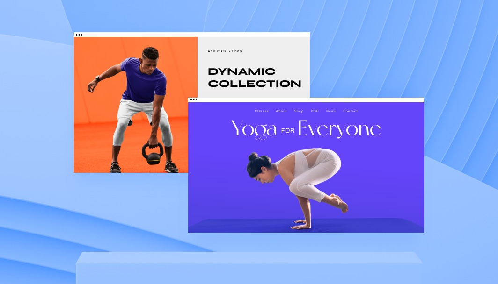
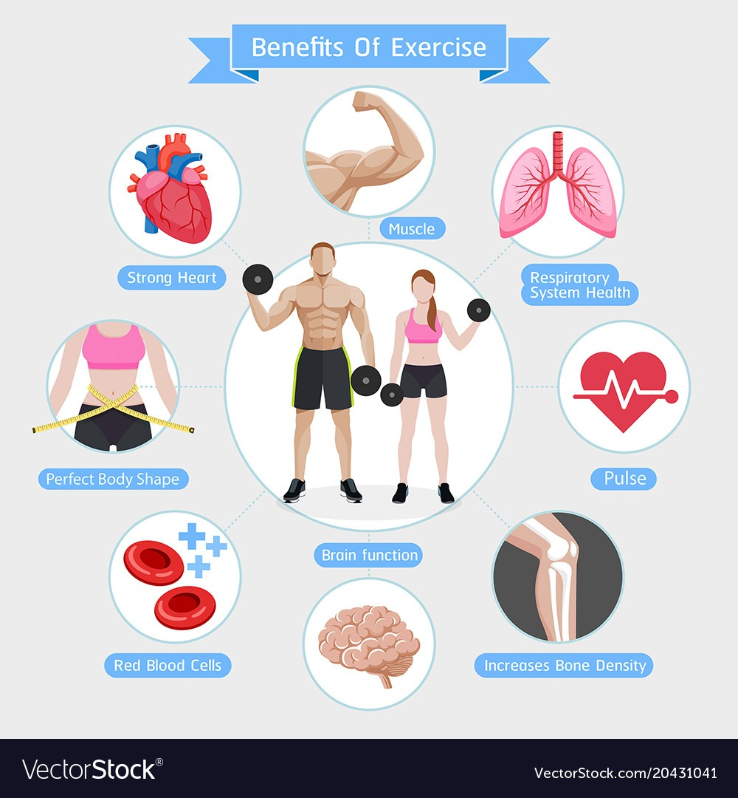
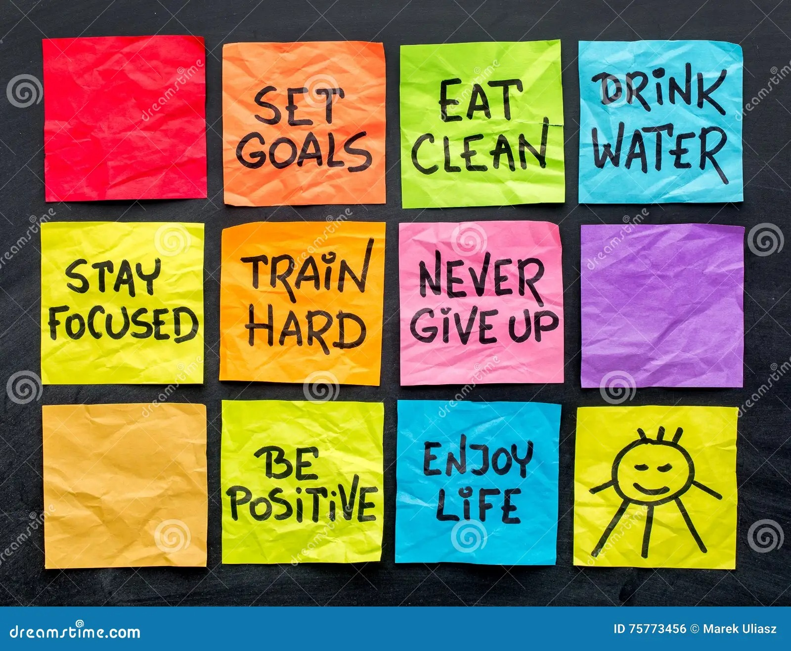

Introduction
There are many ways to improve your physical health. Here are a few tips:
Get regular exercise. Aim for at least 30 minutes of moderate-intensity exercise most days of the week. Eat a healthy diet. Eat plenty of fruits, vegetables, and whole grains. Limit processed foods and sugary drinks. Get enough sleep. Adults need 7-8 hours of sleep per night. Manage stress. Find healthy ways to manage stress, such as exercise, yoga, or meditation.
Benefits of Physical Health and Fitness
Reduced risk of chronic diseases, such as heart disease, stroke, type 2 diabetes, and some types of cancer. Improved mental health, including reduced stress, anxiety, and depression. Increased energy levels and stamina. Stronger bones and muscles. Improved sleep quality. Weight management. Increased self-confidence and self-esteem.
Tips for Improving Physical Health and Fitness
Set realistic goals. Start with small changes that you can stick to over time. Find activities that you enjoy. If you don't enjoy an activity, you're less likely to stick with it. Make exercise a part of your routine. Schedule time for exercise in your day just like you would any other important appointment. Find a workout buddy. Having someone to exercise with can help you stay motivated. Listen to your body. Don't push yourself too hard, especially when you're just starting out.